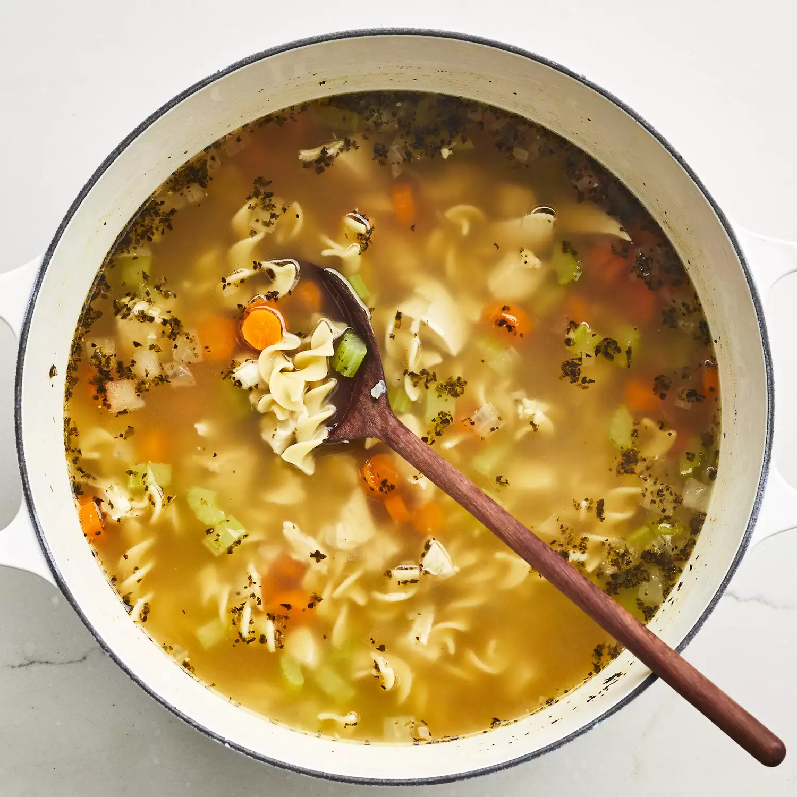

Noodle soup

Description
Whether you're feeling under the weather or you're just in need of a little comfort, there's nothing like homemade chicken noodle soup to warm you up from the inside out.
With this shortcut recipe, you can have the best chicken noodle soup of your life on the table in just 40 minutes.
Chicken noodle soup is a meal in and of itself, so you don't really need to pair it with any sides (besides maybe a few saltine crackers).
But, if you want to go the extra mile, try something bread-based to soak up all that delicious broth.
Ingredients
- 1 tablespoon butter
- 1/2 cup chopped onion
- 1/2 cup chopped celery
- 400 gr chicken broth
- 400 gr can vegetable broth
- 250 gr chopped cooked chicken breast
- 1 1/2 cups egg noodles
- 1 cup sliced carrots
- 1/2 teaspoon dried basil
- 1/2 teaspoon dried oregano
- salt and ground black pepper to taste
Steps
- Melt butter in a large pot over medium heat. Add onion and celery and cook until just tender, about 5 minutes.
- Add chicken broth, vegetable broth, chicken, egg noodles, carrots, basil, oregano, salt, and pepper. Stir to combine and bring to a boil.
- Reduce heat and simmer for 20 minutes.
Link to AllRecipes
CLICK ME
- and watch this recipe along with many others on allrecipes.com